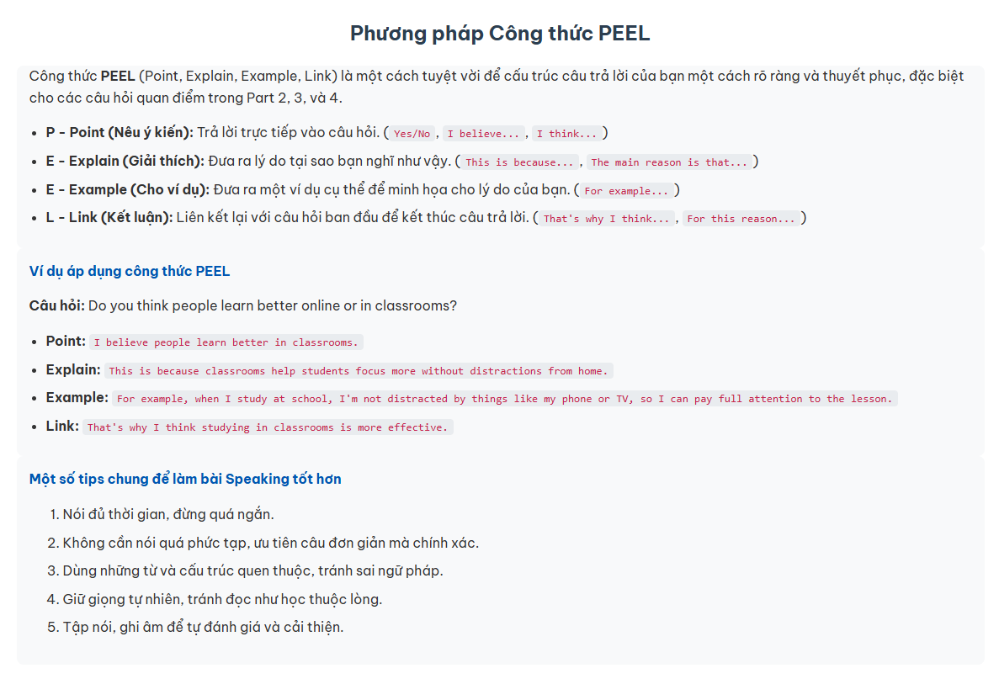
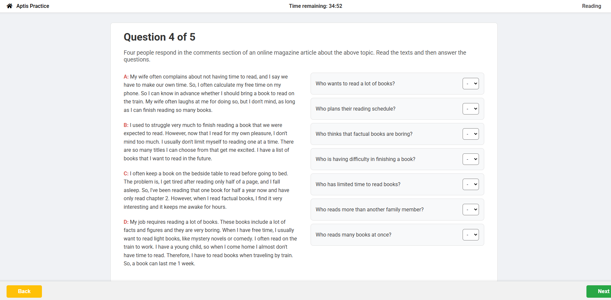
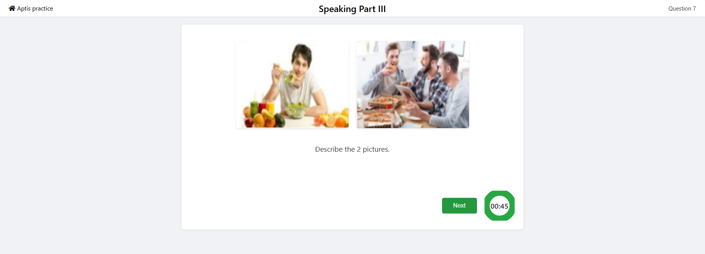
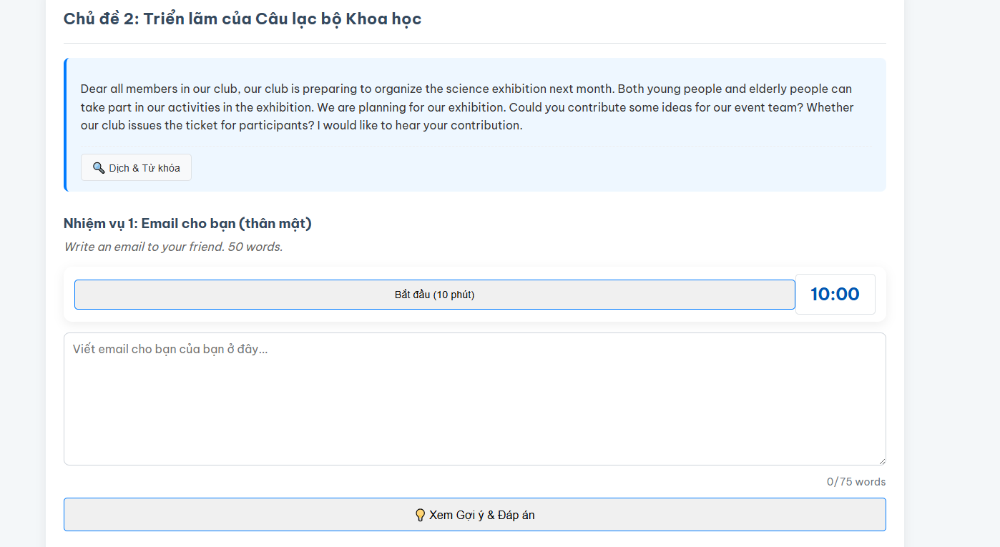

Khám phá bố cục và cách tận dụng tối đa các công cụ trên Aptis Practice.
Aptis Practice được xây dựng với mục tiêu cung cấp một môi trường luyện tập tương tác, bám sát phương pháp học "key" và "câu chuyện gợi nhớ". Trang web này không chỉ là nơi bạn làm bài, mà còn là nơi bạn hệ thống hóa kiến thức và rèn luyện các kỹ năng cần thiết để tự tin bước vào phòng thi.
Trang web được chia thành 5 khu vực chính, tương ứng với 5 tab trên trang chủ:
Đây là điểm khởi đầu của bạn. Hãy dành thời gian đọc kỹ các mục trong phần này để nắm
vững cấu trúc bài thi, các mẹo làm bài quan trọng và các lỗi sai cần tránh. Đặc biệt,
các trang Ngân hàng ý tưởng Speaking và Phương pháp PEEL là
nền tảng cốt lõi cho kỹ năng Nói.

Hai kỹ năng này có cấu trúc học tương tự:



Hy vọng rằng với cấu trúc rõ ràng và các công cụ đa dạng, trang web này sẽ là một người bạn đồng hành hữu ích trên con đường chinh phục Aptis của bạn.